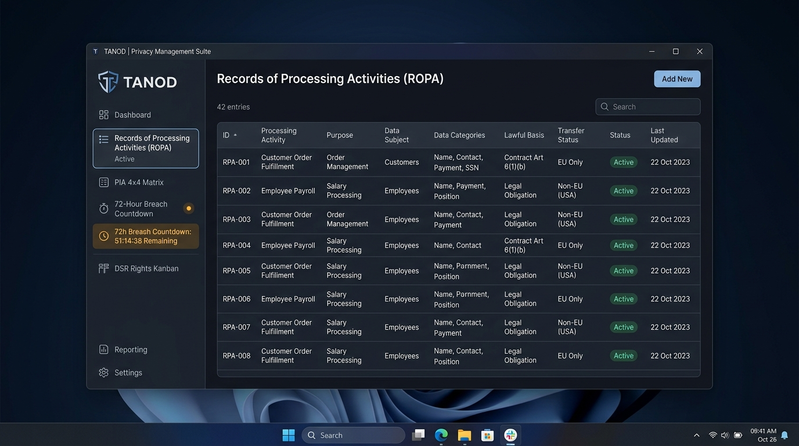

Autonomous, offline-first compliance suite for Republic Act No. 10173. Maintain your ROPA registry, conduct 4×4 PIA risk scoring, manage 72-hour breach timelines, and log Data Subject Rights without sending a single byte to the cloud.

Built for the Exact Requirements of Philippine Law
Tailored specifically to National Privacy Commission (NPC) circulars, advisories, and auditing requirements.
Record of Processing Activities guided by statutory pillars: Subjects (Sec. 3c), Data Categories (Sec. 3g/l), Lawful Basis (Sec. 12/13), PIP Recipients, and automated risk classification.
Standardized Privacy Impact Assessment matrix (Impact 1–4 × Probability 1–4 = Score 1–16) with NPC Advisory 17-03 diagnostic thresholds and 5-stage data flow mapping.
Real-time second-by-second countdown clock calculating statutory 72-hour deadlines from moment of breach discovery under NPC Circular 16-03 with 1-click ASIR CSV generation.
Drag-and-drop workflow tracking Access, Rectification, Erasure, Portability, and Objection requests with strict 30-day statutory SLA indicators and ID verification badges.
Issue institutional privacy memorandums with automatic sequential numbering (DPO-MEMO-2026-001) and official printable letterhead.
One-click field copy buttons mapped to the National Privacy Commission Registration System (NPCRS) web portal form fields for fast, error-free annual renewals.
Under Philippine law, your organization's ROPA and PIA contain highly confidential maps of internal databases, security vulnerabilities, and employee/customer records. Storing this compliance telemetry on third-party cloud servers introduces unnecessary regulatory exposure.
%APPDATA%\tanod\tanod.db